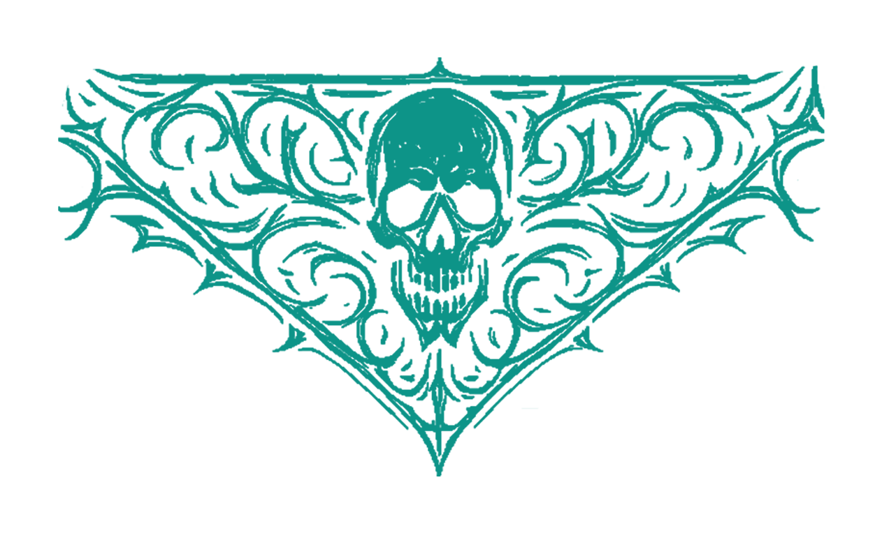

CARTAZ

KERES (Black/Death - Itália)

Os italianos Keres estreiam-se em Portugal depois do aclamado lançamento "Homo Homini Lupus" lançado em 2024. São uma das novas coqueluches do Blackened Death europeu e prometem dar um concerto memorável.
HELEVORN (Gothic/Death/Doom - Espanha)

Depois da última passagem em Portugal (a abrir para Swallow The Sun), os espanhóis Helevorn regressam a Portugal para um concerto muito aguardado. A banda de Maiorca é uma das mais respeitadas do género e promete um concerto cheio de melancolia e peso. Trazem consigo o seu mais recente álbum "Espectres" lançado em 2024, que tem sido muito bem recebido pela crítica e fãs. Um concerto imperdível para os amantes de Gothic/Death/Doom Metal.
ALL AGAINST (Thrash/Groove - Lisboa)

All Against é uma banda de metal feroz de Lisboa, nascida em 2015. Com riffs pesados e potentes, irromperam na cena em 2017 com a estreia, "Hell In Sintra". O primeiro EP, "Medusa", gravado e masterizado pelos All Against, apresentou-os ao mundo. Lançam em 2018 o segundo EP "Feed The Machine", e em 2021 o álbum "I Am Alive", rapidamente ganharam experiência a tocar em festivais e concertos, aperfeiçoando o som e a mensagem contra o sistema. "The Day Of Reckoning" vê a luz do dia em 2023 que solidifica a presença dos All Against na cena do metal nacional. Este ano trazem na bagagem a sua mais recente obra prima "Straight Down To Hell". Com uma mistura de Thrash e Groove Metal, All Against é uma banda que promete um concerto cheio de energia e atitude.
MADMESS (Heavy Psych Rock - Porto)

Os Madmess são uma banda de Heavy Psych Rock do Porto, formada em 2019. Com uma sonoridade muito imersiva e viajante, com riffs densos e uma atmosfera que remete aos sons psicadélicos dos anos 70 e que mistura influências de bandas como Black Sabbath, Kyuss e Fu Manchu, os Madmess trazem uma energia única aos seus concertos. Em 2019, lançaram o seu primeiro álbum, homónimo. Já passaram por vários palcos nacionais e internacionais, incluindo o Desertfest Berlin, e são uma das bandas mais promissoras da cena psicadélica portuguesa. Com uma mistura de Heavy Psych Rock e Stoner, Madmess é uma banda que promete um concerto cheio de energia e atitude.
WANDERER (Heavy/Speed - Porto)

Oriundos do Porto, os Wanderer são uma banda de Heavy/Speed Metal formada em 2019. Com uma sonoridade que remete aos clássicos do Heavy Metal dos anos 80, os Wanderer trazem uma energia única aos seus concertos. Em 2020, lançaram o seu primeiro álbum, "Awakening Force", muito bem recebido pela crítica nacional. Prometem um concerto cheio de velocidade, solos de guitarra electrizantes e uma performance energética que vai fazer o público vibrar.
Nel Buio (Black Metal/Darkwave - Itália)

Os NEL BUIO (italiano para "na escuridão") nasceram no outono de 2023, impulsionados pela visão criativa de Clod the Ripper (mundialmente conhecido pelas suas tatuagens e pelo trabalho musical com bandas como Blasphemer e Septycal Gorge). A missão da banda: fundir a intensidade crua do Black Metal com a nostalgia assombrosa do Darkwave dos anos 80. Sua ascensão meteórica chamou a atenção da prestigiada Avantgarde Music, resultando em um contrato de gravação. O EP de estreia, autointitulado, veio à luz em 21 de junho de 2024, no dia do solstício de Verão. O seu concerto será uma experiência única, onde a fusão de Black Metal e Darkwave promete levar o público a uma viagem sonora intensa e atmosférica.
Amaterazu (Post/Prog/Doom - Viseu)

Um gosto eclético traz várias cores e texturas à mistura, desde oceanos de riffs carregados de doom, a aventuras hipnóticas e psicadélicas alma adentro. Um sentido de narrativa reúne as cores e texturas, pintando um quadro no qual submerges e emerges transformado. Desde 2015, através de invenção e reinvenção, Amaterazu tem refinado este quadro, espalhando-o em três álbuns, cada um uma janela para uma viagem interminável. A procura de uma expressão autêntica e espontânea está na base do modus operandi de Amaterazu. Uma busca incessante e progressiva, guiada pela intuição e a vontade de criar e descobrir. Musicalmente, as influências divergem e convergem numa identidade eclética, integrando diversos estilos na sua voz, desde as auras pesadas de bandas como Boris, Melvins ou Tool, até ao espírito progressivo de King Crimson, Mahavishnu Orchestra ou Frank Zappa, não esquecendo as viagens meditativas e psicadélicas de Pink Floyd, Grails ou até o som ancestral do koto japonês. Além destas inspirações musicais, a busca de novos modos de ser e de viver moldam a perspectiva de Amaterazu, surgindo inevitavelmente na expressão musical as diversas revelações, ensinamentos e filosofias que fazem parte do âmago de cada músico e do progresso colectivo que vai sendo construído. Integrando já projectos como Rustic, Maize, Amazonas, Basalto e The Black Wizards, o trio viseense é composto por membros vindos de diferentes contextos e experiências musicais, com Ricardo Bernardo na guitarra e voz, Ricardo Silva no baixo, teclados e voz e João Lugatte na bateria e percussões...
TVMVLO (Old School Death Metal - Viseu)

Os Tvmvlo são um quarteto oriundo de Viseu que iniciou actividades algures em inicios de 2020. Foi o gosto pelo Old School Death Metal que levou três músicos a se juntarem na sala de ensaios com objectivos bem definidos. António Baptista, também guitarrista dos Basalto e ex Angriff, ficou encarregue da guitarra e da voz, Fábio Loureiro, dos Rotten Rights, ficou com a bateria a seu cargo e Nuno Mendonça, baixista dos Basalto e Zurrapa ficou com as 5 cordas. Aos primeiros ensaios a banda decidiu seguir com o claro objectivo de gravar o seu primeiro álbum, contando desde logo com a preciosa ajuda de OJ Laranjo, tendo este escrito todas as letras para o disco. Foi já em Abril de 2021 que o trio decidiu entrar em estúdio para começar a gravar o que viria a ser o seu trabalho de estreia, intitulado "The Well Of The Lost Children". Toda a gravação e produção do disco ficou entregue a António Baptista nos Doomed Studios e o mesmo tem data de lançamento agendada para 4 de Dezembro de 2021. Com uma digressão extensa de apoio ao primeiro álbum a banda cimentou a sua posição no Underground português tendo algumas incursões em Espanha também. Toda esta estrada fez com que a banda fosse ficando mais entrosada, algo que rapidamente se começou a notar nas primeiras músicas compostas para o segundo álbum. Em Maio de 2024 a banda gravou o segundo álbum “ Portals Of Terror“, com saída prevista para o outono de 2024. Em 11 de Novembro de 2024 “Portals Of Terror” é editado em Cd pela Doomed Records e em Vinil pela Raging Planet Records, Selvajaria Records, Larvae Records e Firecum Records. A entrada na banda de um segundo guitarrista, Gonçalo Coelho, foi para ajudar a melhorar a performance da banda ao vivo de acordo com as gravações e a banda soar ainda mais massiva.
SANTA PLANTA (Stoner/Doom - Espanha)

Santa Planta é uma banda de Stoner Doom nascida nas profundezas de Madrid, Espanha, trazendo riffs esmagadores desde 2018. Eles são influenciados pela aspereza do doom dos anos 90 e moderno, com um toque apimentado de rock psicadélico dos anos 70 e os sussurros sombrios da deusa verde e esfumaçada. Com uma sonoridade que mistura Stoner, Doom e Psicadélico, Santa Planta traz uma energia única aos seus concertos. Em 2024, lançaram o seu primeiro álbum, "From the Trails of Desire".
INVERTED CROSS (Black/Speed - Espanha)

Os espanhóis Inverted Cross são uma banda de Black/Speed Metal formada em 2019. Com uma sonoridade que mistura a agressividade do Black Metal com a velocidade do Speed Metal, os Inverted Cross trazem uma energia única aos seus concertos. 2024 foi o ano em que lançaram o seu primeiro álbum "Eternal Flames Of Hell" pela label portuguese "HellDProd Records".
YAATANA (Thrash - Porto)

Yaatana nasceu em 2023 na grande cidade portuguesa do Porto, fruto da amizade e da ligação incrível entre quatro miúdos metalheads que adoravam Metal. Enquanto bebiam umas cervejas, decidiram tocar juntos e formar uma banda. Em agosto do mesmo ano, fizeram o primeiro ensaio da banda e, em dezembro, tocaram ao vivo pela primeira vez. A partir daí, captaram a atenção de outras bandas locais e do Underground, bem como de promotores, começando a invadir várias salas de espetáculos da cidade (e não só), deixando a sua marca na cena Underground e, assim, fazendo um nome para si próprios. Apenas alguns meses depois, reservaram uma sessão de estúdio para gravar 6 músicas, que viriam a ser o seu primeiro lançamento, o EP de estreia “Anti-Control”. Gravado, misturado e masterizado por Bruno Silva no Estúdio B, Yaatana assina um contrato com a editora Gruesome Records para lançar o seu EP de estreia no dia 23 de agosto, tanto em formato CD como digital. O renomado designer português O Gatuno é o responsável pela incrível arte do CD, e "Arma Nuclear" é o primeiro vídeo oficial a ver a luz do dia. Yaatana está em ascensão e continua a lutar, trabalhar e esforçar-se por um lugar na cena Underground! Eles vão infetar, destruir e não vão fazer prisioneiros!
SPIN THE SKULL (Rock N' Roll/Psych Rock - Leiria)

Os Spin The Skull foram formados em 2023, por membros de Lord of Confusion e Misleading, com o intuito de criar Heavy Rock à antiga. Unidos por Hard Rock, Proto-Punk e longas Jam Sessions, este novo trio evoca um som sujo, com riffs rápidos, wah wah overkill e muitas outras influências certas à mistura. Sempre influenciados pelo Doom e Psych Rock, a banda criou um disco que soa como se tivesse sido enterrado no subsolo, à espera de ser desenterrado durante décadas. Para fãs de Stooges, Satan's Satyrs e The Death Wheelers.
MAU JESUS (Psy/Stoner Rock - Braga)

Os Mau Jesus apresentam-se com jams longas e envolventes onde o transe e o rock se unem e se misturam com o cheiro das serras lusas. Um trio de stoner rock psicadélico instrumental, com temas provenientes do santuário mais recôndito, onde a inspiração das lendas de demónios, bruxas e trasgos, do Minho a Trás-os-Montes, ganham forma e se transformam no psicadélico.
HORÁRIOS
Em breve serão divulgados os horários completos dos dias 11 e 12 de Julho.
ART MARKET
Info em breve.
LOCALIZAÇÃO
Info em breve.
INFO
Info em breve.
PARCEIROS
Info em breve.
ABOUT US
Info em breve.